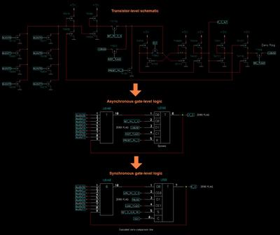

Великий день для эмуляции Z80!
Андрей Титов (Dr. Titus) закончил перевод потранзисторной схемы Z80 (которую, в свою очередь, когда-то получили декапом кристалла кислотой и ручной обработкой фотографий с микроскопа) в понятную схему логических элементов. Тут важно даже не то, что она понятна нам (мало кто за завтраком будет читать схему процессора), а то, что она хорошо укладывается в логические ячейки FPGA. Сейчас стал возможен 100%-точный аналог реального Z80. Ну может не 100%, если внутри происходят какие-то паразитные аналоговые процессы, которые в FPGA может не получиться повторить, но все-таки на фоне того, что было до этого — это огромный скачок.
Что было до этого — это процессорные ядра, которые занимались не повторением, а эмуляцией Z80. Вообще, есть такой аргумент за FPGA-клоны, что это, дескать, не эмуляторы, а ТА ЖЕ САМАЯ СХЕМА, просто перенесенная в FPGA. А вот нифига! Сама схема условного Пентагона там действительно поэлементно та же самая. Но вот процессорное ядро только лишь внешне, для программ, выглядит как Z80. Внутри там полная отсебятина. Написанная с учетом всего, что мы знаем о процессоре, но отсебятина. Если в реальном Z80 вдруг найдется очередная недокументированная багофича (а их найдено множество, начиная от всем известных дополнительных команд для работы с половинками регистров IX/IY, и до хитрых особенностей команд SCF/CCF, реализация которых буквально зависит от производителя процессора), то этого поведения не будет в существующих FPGA-ядрах пока его туда не добавят авторы. А вот поведение полной FPGA-копии процессора будет полностью повторять реальный камень. Опять же, конечно, с оговорками, что речь не про какие-то аналоговые эффекты.
На картинке авторский пример того, как в кучке транзисторов рассмотреть логический элемент. Всего таких транзисторов в Z80 порядка 8.5 тысяч.
Новое ядро добровольцы уже прошили в FPGA, запустили, и оно успешно проходит тесты. Судя по теме, работа заняла почти 5 лет. Не фулл-тайм, Титус же за это время успел ещё полностью отреверсить все части Dizzy и массу ещё чего сделать, но масштаб все равно титанический. Хочется поздравить и Андрея с этим успехом, и нас, ведь та самая мифическая "полная точная копия компьютера в FPGA" сегодня стала намного ближе!
Основная тема тут - https://zx-pk.ru/threads/34173-revers-inzhiniring-z80/page89.html Верилог-исходники тут - https://github.com/dr-Titus/z80-silicon-rtl


Комментарии